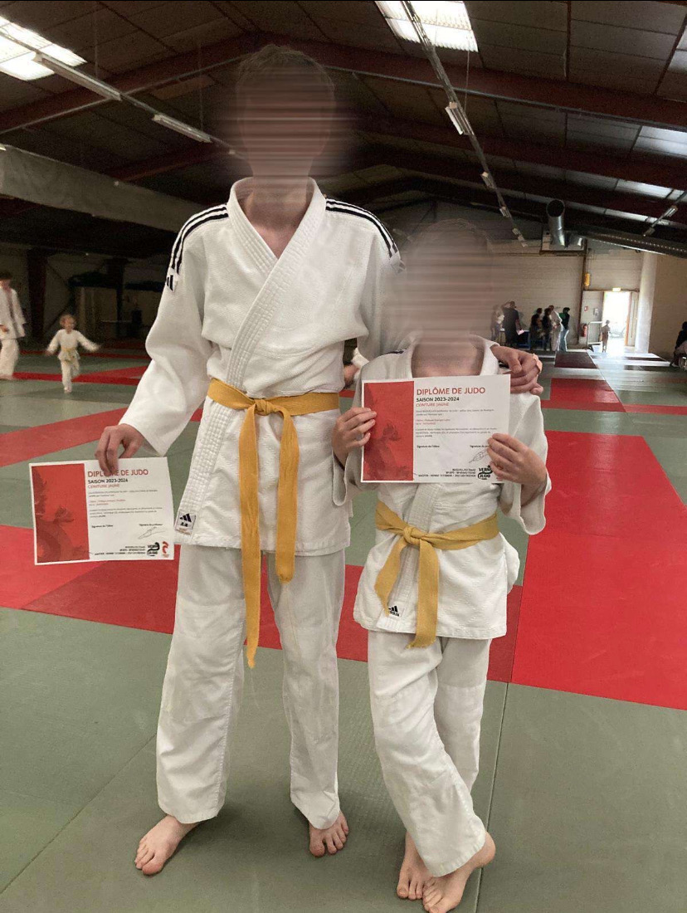

Le judo est un sport de combat d'origine japonaise qui se concentre sur les projections, les immobilisations et les clés articulaires. Il repose sur des principes de respect, de discipline et d'efficacité en utilisant la force de l'adversaire contre lui-même. L'objectif est de maîtriser son opposant sans nécessairement lui causer de blessures. La pratique du judo développe la souplesse, la coordination et la concentration. Ce sport est aussi un moyen d'améliorer le caractère et l'esprit de celui qui le pratique.
